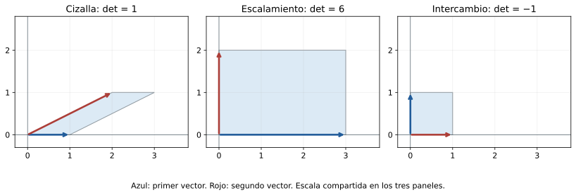
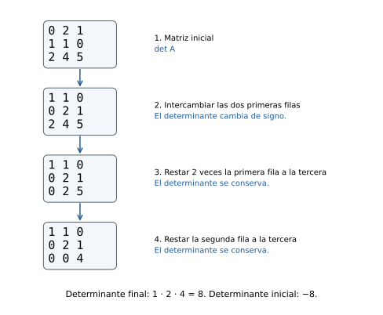
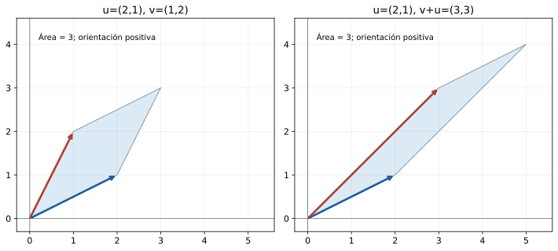

Capítulo 13. Determinantes
Álgebra para matemáticos · Tomo II
← Capítulo 12 · Índice del tomo II · Obra completa · Capítulo 14 →
Una cizalla del plano puede deformar un cuadrado hasta convertirlo en un paralelogramo sin cambiar su área. La transformación \(S(x,y)=(x+2y,y)\), que acompañó nuestro estudio del cambio de base, lleva los lados \((1,0)\) y \((0,1)\) a \((1,0)\) y \((2,1)\). La figura resultante sigue teniendo base uno y altura uno. En cambio, \(D(x,y)=(3x,2y)\) convierte el mismo cuadrado en un rectángulo de área seis. El rango de ambos operadores es dos; ese invariante distingue si el plano se aplasta, pero no cuánto cambia su área.
También podemos intercambiar los dos ejes mediante \(R(x,y)=(y,x)\). El cuadrado conserva su área y cambia la orientación de su par de lados: el primer vector, seguido del segundo, recorre las direcciones en el orden contrario. Buscaremos un número que registre a la vez la escala de las áreas y ese signo. Para las tres transformaciones anteriores serán, respectivamente, \(1\), \(6\) y \(-1\).

En dimensión dos aparece la expresión \(ad-bc\) para las columnas \((a,b)\) y \((c,d)\). Podríamos tomarla como receta y buscar fórmulas análogas de mayor tamaño; resultará más fértil averiguar qué propiedades permiten reconstruirla. La construcción algebraica funcionará sobre cualquier cuerpo conmutativo \(\mathbb F\). La interpretación mediante áreas, signos positivos y negativos se reservará a \(\mathbb R\).
Utilizaremos las operaciones matriciales, independencia y bases, rango y representación de operadores de C03–C12. No se presupone teoría de grupos ni de formas multilineales: desarrollaremos el vocabulario que hace falta. Los ejemplos con números racionales se entienden sobre \(\mathbb R\), salvo indicación contraria.
13.1. Linealidad en una columna, con las otras fijas
Para \(u=(a,b)\) y \(v=(c,h)\) consideremos \(d(u,v)=ah-bc\). Si reemplazamos \(u\) por \(\alpha u+\beta w\) y mantenemos \(v\), la distributividad da \(d(\alpha u+\beta w,v)=\alpha d(u,v)+\beta d(w,v)\). Ocurre lo mismo al variar únicamente \(v\). Pero si multiplicamos ambas columnas por un mismo escalar \(t\), el resultado se multiplica por \(t^2\). La distinción importa: esta función no es una aplicación lineal del espacio de matrices al cuerpo.
Además, \(d(u,u)=0\) y \(d(e_1,e_2)=1\). La primera igualdad expresa que dos lados iguales producen una figura aplastada; la segunda fija la unidad con la que medimos. Esas propiedades tienen sentido en cualquier dimensión aunque ya no podamos dibujar los vectores.
Definición 13.1. Una función \(d:(\mathbb F^n)^n\to\mathbb F\) es multilineal si es lineal en cada uno de sus \(n\) argumentos manteniendo fijos los demás. Es alternante si su valor es cero cuando dos argumentos son iguales. Diremos que está normalizada si \(d(e_1,\ldots,e_n)=1\).
Cada argumento será una columna. Multilinealidad exige, para cada posición \(j\),
\[ d(v_1,\ldots,\alpha u+\beta w,\ldots,v_n) =\alpha d(v_1,\ldots,u,\ldots,v_n) +\beta d(v_1,\ldots,w,\ldots,v_n). \]
Sólo cambia la posición indicada. Si se modifican dos columnas simultáneamente, hay que expandir en ambas posiciones y aparecen términos cruzados. Para una columna cero, la linealidad en esa posición obliga a que el valor sea cero.
Lema 13.1 (consecuencias de la alternancia). Para una función multilineal alternante, intercambiar dos argumentos cambia el valor por su opuesto. Añadir a un argumento un múltiplo de otro deja el valor intacto. Si los \(n\) argumentos son linealmente dependientes, el valor es cero.
Demostración. Fijemos todas las posiciones salvo dos y pongamos en ambas \(u+w\). Por alternancia el valor es cero. Al expandir en las dos posiciones, los términos con \(u,u\) y con \(w,w\) desaparecen; quedan el valor con \(u,w\) y el valor con \(w,u\), cuya suma es cero. Así, el intercambio cambia el signo.
Si reemplazamos \(v_j\) por \(v_j+cv_k\), con \(k\ne j\), la expansión produce el valor original más \(c\) veces otro valor en el que \(v_k\) ocupa dos posiciones. Este último es cero por alternancia, lo que prueba la segunda afirmación.
Para la tercera, una relación no trivial \(\sum_j\lambda_jv_j=0\) tiene algún \(\lambda_k\ne0\). Podemos despejar \(v_k=-\sum_{j\ne k}(\lambda_j/\lambda_k)v_j\). Al sustituir esta combinación en la posición \(k\) y expandir, cada término tiene un argumento repetido y se anula. \(\square\)
La prueba del intercambio es válida incluso en característica dos, donde \(-x=x\). La conversa requiere cuidado: allí una función que permanece igual al intercambiar dos argumentos no tiene por qué anularse cuando éstos coinciden. Por ejemplo, \(b(u,v)=u_1v_1\) sobre \(\mathbb F_2^2\) es bilineal y satisface \(b(v,u)=-b(u,v)\), pero \(b(e_1,e_1)=1\). Por eso la definición de alternancia se hizo mediante repetición de argumentos.
En orden dos ya podemos reconstruir la expresión inicial. Expandir \(d(ae_1+be_2,ce_1+he_2)\) deja sólo los términos \(ah\,d(e_1,e_2)\) y \(bc\,d(e_2,e_1)\). La normalización y el lema dan \(ah-bc\). En orden mayor tendremos la misma expansión, pero habrá que organizar los órdenes posibles de los vectores básicos.
13.2. Contar los intercambios sin depender del camino
Una permutación de \(\{1,\ldots,n\}\) es una biyección de ese conjunto consigo mismo. Podemos escribirla como una lista \(\sigma(1),\ldots,\sigma(n)\) que contiene cada número una vez. Una inversión es un par de posiciones \(i<j\) para el cual \(\sigma(i)>\sigma(j)\). Su número, denotado \(N(\sigma)\), cuenta los pares que aparecen en orden contrario al natural.
Definición 13.2. El signo de una permutación es el entero \(\operatorname{sgn}\sigma=(-1)^{N(\sigma)}\). Cuando se usa como escalar de \(\mathbb F\), se interpreta como \(1_{\mathbb F}\) o \(-1_{\mathbb F}\).
Lema 13.2. Intercambiar dos posiciones adyacentes de una permutación cambia su signo. Intercambiar dos posiciones cualesquiera también cambia su signo. Toda permutación puede ordenarse mediante intercambios adyacentes, y cualquier función multilineal alternante satisface
\[ d(e_{\sigma(1)},\ldots,e_{\sigma(n)}) =(\operatorname{sgn}\sigma)\,d(e_1,\ldots,e_n). \]
Además, \(\operatorname{sgn}(\sigma^{-1})=\operatorname{sgn}\sigma\).
Demostración. Al intercambiar dos entradas vecinas, cambia únicamente la condición de inversión del par que forman. Para cualquier otra entrada, el número total de inversiones que mantiene con esas dos se conserva. Por tanto \(N\) aumenta o disminuye en uno. Un intercambio entre posiciones \(i<j\) puede realizarse moviendo la entrada de \(i\) hasta \(j\) mediante \(j-i\) intercambios adyacentes y moviendo después la entrada originalmente situada en \(j\) hasta \(i\) mediante \(j-i-1\) intercambios. Son \(2(j-i)-1\), un número impar, de modo que también cambia el signo.
Si la lista no está ordenada, tiene una pareja adyacente invertida: si todas las parejas vecinas estuvieran en orden creciente, toda la lista lo estaría. Intercambiar esa pareja reduce \(N\) en uno. Repitiendo llegamos a la lista usual después de \(N(\sigma)\) intercambios. Aplicar el lema 13.1 en cada paso da la fórmula para \(d\). No necesitamos escoger un camino canónico: cada intercambio cambia la paridad de \(N\), así que todo camino entre los mismos órdenes tiene la misma paridad.
Por último, una inversión \(i<j\) con \(\sigma(i)>\sigma(j)\) corresponde a la inversión de \(\sigma^{-1}\) situada en las posiciones \(\sigma(j)<\sigma(i)\): sus imágenes son \(j>i\). Esta correspondencia es biyectiva, por lo que las dos permutaciones tienen igual número de inversiones y el mismo signo. \(\square\)
Por ejemplo, la lista \((3,1,2)\) tiene dos inversiones y signo positivo. La lista \((2,1,3)\) tiene una y signo negativo. El signo se ha construido contando pares de enteros, sin usar previamente determinantes ni resultados de teoría de grupos.
13.3. Existencia, unicidad y fórmula de Leibniz
Si las columnas de \(A\) son \(v_1,\ldots,v_n\), cada una se expresa como \(v_j=\sum_i a_{ij}e_i\). Expandir una función multilineal en todas las posiciones produce \(n^n\) términos indexados por listas de índices de fila. Cuando la función es alternante, desaparece cualquier lista que repita un índice. Las restantes son las permutaciones.
Teorema 13.3 (caracterización del determinante). Para cada \(n\ge1\) existe una única función multilineal, alternante y normalizada de las \(n\) columnas de una matriz de orden \(n\). Se llama determinante, y viene dada por
\[ \det A=\sum_{\sigma\in S_n}(\operatorname{sgn}\sigma) \prod_{j=1}^n a_{\sigma(j),j}, \]
donde \(S_n\) es el conjunto de permutaciones de \(\{1,\ldots,n\}\). Más generalmente, toda función multilineal alternante \(d\) satisface \(d(v_1,\ldots,v_n)=d(e_1,\ldots,e_n)\det A\).
Demostración. Comencemos por lo que las propiedades obligan a hacer. La expansión descrita antes del enunciado es
\[ d(v_1,\ldots,v_n)= \sum_{i_1,\ldots,i_n=1}^n \left(\prod_{j=1}^na_{i_jj}\right)d(e_{i_1},\ldots,e_{i_n}). \]
Los términos con índices repetidos son cero. Para los restantes, el lema 13.2 identifica el último factor con \((\operatorname{sgn}\sigma)d(e_1,\ldots,e_n)\). Esto demuestra la fórmula general y la unicidad en el caso normalizado. Todavía no demuestra que las propiedades puedan satisfacerse: debemos comprobar la existencia.
Definamos una función mediante la suma de Leibniz. Cada producto utiliza exactamente una entrada de cada columna, así que al variar una sola columna es lineal en ella; la suma finita conserva esa propiedad. En la identidad, todo producto se anula salvo el de la permutación identidad, que vale uno. Falta la alternancia.
Supongamos iguales las columnas \(j\) y \(k\). Emparejamos cada permutación \(\sigma\) con la permutación obtenida al intercambiar sus valores en esas dos posiciones. Son permutaciones distintas, los productos correspondientes son iguales porque las columnas coinciden, y sus signos son opuestos por el lema 13.2. Cada pareja suma cero. Esta cancelación funciona también en característica dos: un término y su opuesto siempre suman cero. Por tanto la función definida es alternante, y su existencia queda probada. \(\square\)
Para orden uno la fórmula dice \(\det(a)=a\). Adoptamos además \(\det I_0=1\) para la matriz vacía de orden cero; la convención de producto vacío uno hará que las expansiones por menores funcionen también en orden uno.
En orden dos recuperamos \(\det\begin{pmatrix}a&c\\b&d\end{pmatrix}=ad-bc\). En orden tres las seis permutaciones dan
\[ \det\begin{pmatrix}a&b&c\\d&e&f\\g&h&i\end{pmatrix} =aei+bfg+cdh-ceg-bdi-afh. \]
La fórmula permite reconstruir los signos y comprender qué sumamos. Su número de términos crece como \(n!\), por lo que no será nuestro método habitual de cálculo en órdenes grandes. La caracterización por columnas da herramientas más económicas.
13.4. Trasponer, triangularizar y llevar la cuenta de las operaciones
Proposición 13.4 (transposición y operaciones elementales). Para toda matriz cuadrada, \(\det A^{\mathsf T}=\det A\). El determinante es, por tanto, multilineal y alternante también en las filas. En filas o columnas, un intercambio multiplica el determinante por \(-1\), multiplicar una de ellas por \(c\) multiplica el determinante por \(c\), y añadir un múltiplo de otra no lo cambia.
Demostración. Aplicar Leibniz a \(A^{\mathsf T}\) produce productos \(\prod_j a_{j,\sigma(j)}\). Si ponemos \(i=\sigma(j)\), ese producto se reescribe como \(\prod_i a_{\sigma^{-1}(i),i}\). La aplicación \(\sigma\mapsto\sigma^{-1}\) recorre todas las permutaciones y conserva su signo por el lema 13.2. La suma resultante es \(\det A\).
Las propiedades de columnas pasan a las filas por transposición. El intercambio y la adición se demostraron en el lema 13.1, y el efecto de escalar una posición es la multilinealidad. \(\square\)
Proposición 13.5 (matrices triangulares). El determinante de una matriz triangular superior o inferior es el producto de sus entradas diagonales.
Demostración. Para una matriz triangular superior, un término no nulo de Leibniz sólo puede usar entradas con \(\sigma(j)\le j\). Para \(j=1\) esto obliga a \(\sigma(1)=1\); después, para \(j=2\) obliga a \(\sigma(2)=2\), pues el valor uno ya se utilizó. Continuando, sólo queda la identidad. Su producto es \(a_{11}\cdots a_{nn}\). El caso triangular inferior se obtiene trasponiendo. \(\square\)
Al triangularizar \(A\) mediante eliminación, cada operación debe acompañarse de su efecto sobre el determinante. Si sólo usamos adiciones de múltiplos de otras filas y \(s\) intercambios, la matriz triangular \(U\) satisface \(\det U=(-1)^s\det A\). Como el inverso de \((-1)^s\) es él mismo, \(\det A=(-1)^s\prod_j u_{jj}\). Si además escalamos filas por factores no nulos \(c_1,\ldots,c_k\), aparece el factor adicional \(\prod_\ell c_\ell\) en \(\det U\) y hay que dividir por él al recuperar \(\det A\).
Por ejemplo,
\[ A=\begin{pmatrix}0&2&1\\1&1&0\\2&4&5\end{pmatrix} \longrightarrow \begin{pmatrix}1&1&0\\0&2&1\\2&4&5\end{pmatrix} \longrightarrow \begin{pmatrix}1&1&0\\0&2&1\\0&2&5\end{pmatrix} \longrightarrow \begin{pmatrix}1&1&0\\0&2&1\\0&0&4\end{pmatrix}. \]
Se intercambiaron las dos primeras filas y después se hicieron \(R_3\leftarrow R_3-2R_1\) y \(R_3\leftarrow R_3-R_2\). El producto diagonal final es ocho, y el único intercambio da \(\det A=-8\). Reducir hasta la identidad también permitiría calcularlo, pero obligaría a registrar normalizaciones adicionales sin aportar información necesaria.

13.5. Componer multiplica los determinantes
Sean \(A\) y \(B\) matrices de orden \(n\), con columnas de \(B\) iguales a \(v_1,\ldots,v_n\). Las columnas de \(AB\) son \(Av_1,\ldots,Av_n\). Esta observación convierte una propiedad del producto matricial en una aplicación de la unicidad ya demostrada.
Teorema 13.6 (multiplicatividad). Para \(A,B\in M_n(\mathbb F)\),
\[ \det(AB)=(\det A)(\det B). \]
Demostración. Fijemos \(A\) y definamos \(d_A(v_1,\ldots,v_n)=\det(Av_1,\ldots,Av_n)\). Como la aplicación \(v\mapsto Av\) es lineal, \(d_A\) es multilineal. Si se repiten dos argumentos, sus imágenes también se repiten, de modo que es alternante. Su valor en \((e_1,\ldots,e_n)\) es \(\det A\). La afirmación general del teorema 13.3 da
\[ \det(Av_1,\ldots,Av_n)=(\det A)\det(v_1,\ldots,v_n). \]
El miembro izquierdo es \(\det(AB)\) y el segundo factor del derecho es \(\det B\). No se ha supuesto que ninguno sea distinto de cero. \(\square\)
Teorema 13.7 (invertibilidad). Para una matriz cuadrada sobre \(\mathbb F\), son equivalentes: \(\det A\ne0\), las columnas de \(A\) forman una base, \(\operatorname{rg}A=n\) y \(A\) es invertible. Si es invertible, \(\det(A^{-1})=(\det A)^{-1}\).
Demostración. Si las columnas son dependientes, el lema 13.1 da \(\det A=0\). Por contraposición, determinante no nulo implica columnas independientes; al haber \(n\) columnas en \(\mathbb F^n\), forman una base. C07 y C09 identifican esta condición con rango \(n\), y C03–C09 con invertibilidad, mediante la aplicación \(x\mapsto Ax\).
Si \(A\) es invertible, la multiplicatividad aplicada a \(AA^{-1}=I\) da \((\det A)\det(A^{-1})=1\). Ninguno de los factores puede ser cero, y al dividir obtenemos la fórmula. Se cierra así el ciclo de equivalencias. \(\square\)
El determinante añade un criterio escalar a resultados que ya conocíamos por sistemas y dimensión. Una matriz rectangular puede tener rango máximo e incluso una inversa por un lado; el determinante definido aquí corresponde a matrices cuadradas y no sustituye esas distinciones.
Tampoco se puede usar linealidad para sumar matrices completas. Para \(n\ge2\), \(\det(2I_n)=2^n\) sobre \(\mathbb R\), mientras \(\det I_n+\det I_n=2\). El ejemplo \(n=2\) ya muestra la falla. Al sumar matrices se suman todas sus columnas a la vez, y la multilinealidad produce términos mezclados. En cambio, de esa misma propiedad sí se deduce \(\det(cA)=c^n\det A\), porque se ha multiplicado cada una de las \(n\) columnas por \(c\).
13.6. El determinante de un operador y el de dos descripciones
C12 mostró que un cambio de base de un operador transforma \(A\) en \(P^{-1}AP\). La multiplicatividad permite seguir los tres factores.
Proposición 13.8 (invariancia por semejanza). Si \(A'=P^{-1}AP\) con \(P\) invertible, entonces \(\det A'=\det A\). Por tanto, para un operador \(T:V\to V\) de dimensión finita está bien definido \(\det T=\det[T]_{\mathcal B}\) usando una misma base \(\mathcal B\) en entrada y salida. Además, \(\det(ST)=(\det S)(\det T)\).
Demostración. La multiplicatividad y el teorema 13.7 dan
\[ \det(P^{-1}AP)=\det(P^{-1})\det A\det P =(\det P)^{-1}\det A\det P=\det A. \]
Dos bases producen matrices semejantes por C12, lo que prueba la independencia. Representar una composición en una misma base y aplicar el teorema 13.6 da la última afirmación. \(\square\)
Si se cambian las bases de entrada y salida de manera independiente, aunque tengan la misma dimensión, la fórmula es distinta. Para \(A'=Q^{-1}AP\),
\[ \det A'=\frac{\det P}{\det Q}\det A. \]
Así, el valor escalar puede cambiar con una representación mixta. La propiedad de ser cero se conserva, pues \(\det P\) y \(\det Q\) son no nulos; esto concuerda con la invariancia del rango. La identidad de \(\mathbb R\) tiene matriz \((1)\) usando una misma base y matriz \((2)\) usando el vector \(2\) como base de entrada y el vector \(1\) como base de salida. Su determinante como operador es uno.
La traza y el determinante son invariantes distintos. En orden dos, \(\operatorname{diag}(1,4)\) y \(\operatorname{diag}(2,3)\) tienen la misma traza cinco y determinantes cuatro y seis, por lo que no son semejantes. Aun la coincidencia de ambos invariantes puede ser insuficiente: \(I_2\) y \(\begin{pmatrix}1&1\\0&1\end{pmatrix}\) tienen traza dos y determinante uno, pero todo conjugado de \(I_2\) es él mismo.
13.7. Menores, cofactores y una inversa explícita
La eliminación permite calcular un determinante sin desplegar sus \(n!\) términos. Otra organización útil reúne los términos según la entrada que utilizan de una fila o columna. Esto produce determinantes de menor tamaño y prepara una fórmula de inversa.
Definición 13.3. Para \(A\in M_n(\mathbb F)\), \(A_{\widehat i\widehat j}\) es la matriz obtenida suprimiendo la fila \(i\) y la columna \(j\), sin cambiar el orden de las restantes. El cofactor de \(a_{ij}\) es \(C_{ij}=(-1)^{i+j}\det A_{\widehat i\widehat j}\). La adjugata es la transpuesta de la matriz de cofactores: \((\operatorname{adj}A)_{ij}=C_{ji}\).
Se llama menor asociado a esa supresión al determinante \(\det A_{\widehat i\widehat j}\). También se habla de menores de otros tamaños, tomando submatrices cuadradas con las filas y columnas elegidas en su orden original. La adjugata no es la transpuesta de \(A\) y tampoco es el operador adjunto asociado a un producto interno.
Teorema 13.9 (expansión por cofactores). Fijando una columna \(j\) o una fila \(i\) se tiene, respectivamente,
\[ \det A=\sum_{i=1}^na_{ij}C_{ij},\qquad \det A=\sum_{j=1}^na_{ij}C_{ij}. \]
Demostración. Agrupemos los términos de Leibniz según \(\sigma(j)=i\), es decir, según la fila escogida en la columna fija \(j\). El factor \(a_{ij}\) se mantiene común. Al borrar esa fila y esa columna, las elecciones restantes recorren las permutaciones de la submatriz.
Hay que comparar sus signos. Si \(L\) valores menores que \(i\) aparecen antes de la posición \(j\) en la lista de \(\sigma\), las inversiones que involucran esa posición son \((j-1-L)+(i-1-L)=i+j-2-2L\). Las otras inversiones son exactamente las de la permutación reducida, pues borrar y renumerar conservando el orden no cambia las comparaciones. El factor de signo perdido es, por tanto, \((-1)^{i+j}\). La suma del grupo vale \(a_{ij}(-1)^{i+j}\det A_{\widehat i\widehat j}\). Sumar sobre \(i\) prueba la expansión por la columna \(j\). La expansión por filas se obtiene aplicando la de columnas a \(A^{\mathsf T}\) y usando la proposición 13.4 en los menores. \(\square\)
Por ejemplo, en \(A=\begin{pmatrix}2&0&1\\0&3&0\\1&0&4\end{pmatrix}\) la segunda fila sólo tiene una entrada no nula. La expansión da \(\det A=3\det\begin{pmatrix}2&1\\1&4\end{pmatrix}=3(8-1)=21\). La elección de fila evitó calcular dos menores que se multiplicarían por cero.
Teorema 13.10 (identidades de la adjugata). Para toda matriz \(A\) de orden \(n\ge1\),
\[ A\operatorname{adj}A=\operatorname{adj}A\,A=(\det A)I_n. \]
Si \(\det A\ne0\), entonces \(A^{-1}=(\det A)^{-1}\operatorname{adj}A\).
Demostración. La entrada \((i,j)\) de \(A\operatorname{adj}A\) es \(\sum_k a_{ik}C_{jk}\). Si \(i=j\), es la expansión por la fila \(j\) y vale \(\det A\). Si \(i\ne j\), reemplacemos la fila \(j\) de \(A\) por la fila \(i\). Los cofactores de esa fila no cambian, porque al calcularlos la fila reemplazada se suprime. La suma anterior es el determinante de esa matriz con dos filas iguales y vale cero. Esto prueba \(A\operatorname{adj}A=(\det A)I\).
La entrada \((i,j)\) de \(\operatorname{adj}A\,A\) es \(\sum_k C_{ki}a_{kj}\). Para \(i=j\) es la expansión por la columna \(i\). Para \(i\ne j\), es la expansión por esa misma columna después de reemplazarla por la columna \(j\); los menores no cambian y las dos columnas iguales anulan el determinante. Resulta el segundo producto. Si \(\det A\ne0\), dividir ambas identidades por ese escalar produce una inversa por ambos lados. \(\square\)
En orden dos,
\[ \operatorname{adj}\begin{pmatrix}a&b\\c&d\end{pmatrix} =\begin{pmatrix}d&-b\\-c&a\end{pmatrix}. \]
La posición transpuesta de los cofactores es la que hace que el producto reconstruya las expansiones adecuadas. Sobre cuerpos de cualquier característica la identidad de productos sigue siendo válida, incluso cuando el determinante es cero; lo que queda prohibido en ese caso es dividir por él.
13.8. Sistemas y bloques: elegir cuánto calcular
La fórmula de la inversa proporciona una expresión para cada incógnita de un sistema cuadrado invertible. Podemos obtenerla de manera más directa usando las columnas y ver así qué problema resuelve.
Corolario 13.11 (regla de Cramer). Si \(A\) es invertible y \(Ax=b\), sea \(A_j(b)\) la matriz obtenida reemplazando la columna \(j\) por \(b\). Entonces
\[ x_j=\frac{\det A_j(b)}{\det A}\qquad(1\le j\le n). \]
Demostración. Si las columnas de \(A\) son \(v_i\), la ecuación es \(b=\sum_i x_iv_i\). Expandir el determinante de \(A_j(b)\) en la posición reemplazada produce términos con columnas repetidas para todo \(i\ne j\). Sólo queda \(x_j\det A\). Dividir por \(\det A\ne0\) da la fórmula. \(\square\)
Para el sistema \(2x+y=5\), \(x-y=1\), el determinante de la matriz de coeficientes es \(-3\). Reemplazar la primera columna da determinante \(-6\), y reemplazar la segunda da \(-3\). Por tanto \(x=2\), \(y=1\), lo que también se comprueba en las ecuaciones. La regla produce fórmulas útiles cuando interesan las dependencias algebraicas de las incógnitas; para calcular un sistema grande, reutilizar una eliminación suele ahorrar el trabajo de evaluar un determinante por incógnita.
Cuando \(\det A=0\), Cramer deja de ser una fórmula para la solución. Ni siquiera el hecho de que todos los determinantes reemplazados sean cero asegura compatibilidad: para \(A=0_2\) y \(b=(1,0)^{\mathsf T}\), todos ellos son cero y el sistema es imposible. Las herramientas de rango y eliminación de C01–C09 siguen decidiendo ese problema.
Proposición 13.12 (triangularidad por bloques). Si \(B\) y \(D\) son matrices cuadradas de órdenes \(r\) y \(s\), respectivamente, entonces
\[ \det\begin{pmatrix}B&C\\0&D\end{pmatrix}=(\det B)(\det D). \]
También vale la fórmula para la disposición triangular inferior. No se requiere que los bloques diagonales sean invertibles.
Demostración. En las primeras \(r\) columnas, las entradas situadas en las últimas \(s\) filas son cero. Por tanto, un término de Leibniz no nulo debe escoger para esas columnas \(r\) filas distintas entre las primeras \(r\), es decir, todas ellas. Las últimas \(s\) columnas quedan obligadas a usar las últimas \(s\) filas. Las permutaciones que sobreviven se separan en una permutación de cada bloque diagonal, y no hay inversiones entre ambos grupos porque toda fila del primero precede a toda fila del segundo. Sus signos y productos se multiplican; la suma factoriza como \(\det B\det D\). El caso inferior se obtiene trasponiendo. \(\square\)
El bloque \(C\) no influye en esa fórmula, pero su posición sí. Para cuatro bloques cuadrados del mismo orden, la fórmula \(\det\begin{pmatrix}B&C\\E&D\end{pmatrix}=\det(BD-CE)\) puede fallar: los bloques son matrices y su producto no es conmutativo. La prueba anterior se apoyaba en ceros que restringían las permutaciones.
13.9. Área, orientación y pérdida de dimensión
La construcción algebraica permite justificar la interpretación que abrió el capítulo. Para \(u=(a,b)\) y \(v=(c,d)\) reales, el área del paralelogramo que determinan es \(|ad-bc|\). Si \(a\ne0\), podemos reemplazar \(v\) por \(w=v-(c/a)u=(0,d-bc/a)\). Este desplazamiento del segundo lado en la dirección del primero conserva base y altura respecto de la recta que contiene a \(u\), por lo que conserva el área. El paralelogramo de lados \(u\) y \(w\) tiene un lado vertical de longitud \(|d-bc/a|\) y distancia horizontal entre sus lados verticales igual a \(|a|\). Su área es \(|a|\,|d-bc/a|=|ad-bc|\). Si \(a=0\), el primer lado es vertical y la misma cuenta directa da \(|b|\,|c|=|ad-bc|\). El caso \(u=0\) queda incluido y da área cero.
El signo de \(ad-bc\) define la orientación del par independiente respecto del orden usual \((e_1,e_2)\). Intercambiar los lados cambia ese signo y mantiene el área. Dos lados dependientes tienen determinante cero y no determinan orientación de una base. Para toda transformación real de matriz \(A\),
\[ \det(Au,Av)=(\det A)\det(u,v). \]
Es la multiplicatividad aplicada a la matriz con columnas \(u,v\). Al tomar valores absolutos, cada paralelogramo ve multiplicada su área por \(|\det A|\). Si el determinante es negativo se invierte además la orientación; si es cero, todas esas áreas pasan a cero.

En \(\mathbb R^n\) se llama volumen orientado algebraico de una lista de \(n\) vectores al determinante de su matriz de columnas en la base usual. Esta denominación prolonga las propiedades que acabamos de verificar en el plano; no presupone una teoría de medida en dimensión arbitraria. Su valor cero equivale a dependencia y todo operador lo multiplica por un mismo factor. La distinción entre conservar dimensión y conservar volumen queda visible incluso sin figuras: \(\operatorname{diag}(3,2)\) tiene rango completo y multiplica las áreas por seis, mientras la cizalla tiene también rango completo y las conserva.
13.10. Ejercicios
Se trabaja sobre \(\mathbb R\) en los ejercicios numéricos, salvo que se indique otro cuerpo. Los argumentos generales se refieren a un cuerpo conmutativo \(\mathbb F\). Todas las matrices cuyos determinantes aparecen son cuadradas.
Ejercicio 1 — Un cálculo que se comprueba. Calcula el determinante de \(A=\begin{pmatrix}3&-2\\4&1\end{pmatrix}\) y comprueba que sus columnas son independientes.
Ejercicio 2 — Triangularidad. Calcula \(\det\begin{pmatrix}2&7&-1\\0&-3&4\\0&0&5\end{pmatrix}\) y explica por qué las entradas fuera de la diagonal no intervienen.
Ejercicio 3 — Seguir operaciones. Una matriz real \(A\) de orden tres tiene determinante cinco. Se intercambian sus primeras dos filas, se multiplica después la tercera fila por \(-2\) y se suma a la segunda tres veces la primera. ¿Cuál es el determinante final?
Ejercicio 4 — Eliminación suficiente. Calcula \(\det\begin{pmatrix}0&1&2\\2&1&0\\4&3&1\end{pmatrix}\) por eliminación, registrando el efecto de cada operación.
Ejercicio 5 — Escoger una expansión. Calcula el determinante de \(\begin{pmatrix}2&0&1\\0&3&0\\1&0&4\end{pmatrix}\) y sus tres cofactores de la segunda fila.
Ejercicio 6 — Parámetros y rango. Para \(A_t=\begin{pmatrix}t&1\\1&t\end{pmatrix}\), determina los valores reales de \(t\) para los que es invertible y calcula el rango en los restantes.
Ejercicio 7 — Un error de linealidad. Refuta sobre \(\mathbb R\) la afirmación \(\det(A+B)=\det A+\det B\) en orden dos. Explica qué términos omitió ese razonamiento.
Ejercicio 8 — Una columna y todas las columnas. Si \(A\) es de orden cuatro y \(\det A=3\), compara el efecto de multiplicar sólo la segunda columna por dos con el de multiplicar toda la matriz por dos.
Ejercicio 9 — Inversiones. Determina los signos de las listas \((4,2,1,3)\) y \((3,1,4,2)\) y los determinantes de las matrices que tienen como columnas los vectores básicos en esos órdenes.
Ejercicio 10 — Orden invertido. La matriz \(J\) tiene columnas \(e_n,e_{n-1},\ldots,e_1\). Calcula \(\det J\). Deduce el determinante de una matriz cuya única diagonal posiblemente no nula es la secundaria.
Ejercicio 11 — Un cálculo en característica dos. En \(\mathbb F_2\), calcula el determinante y la inversa de \(A=\begin{pmatrix}1&1\\1&0\end{pmatrix}\).
Ejercicio 12 — Antisimetría y alternancia. Construye sobre \(\mathbb F_2^2\) una función bilineal \(b\) con \(b(v,u)=-b(u,v)\) que no sea alternante. ¿Por qué no existe tal ejemplo cuando la característica es distinta de dos?
Ejercicio 13 — Una normalización diferente. Sea \(d\) una función multilineal alternante de las columnas de matrices de orden \(n\ge1\), con \(d(e_1,\ldots,e_n)=c\). Demuestra que \(d(A)=c\det A\), incluso si \(c=0\).
Ejercicio 14 — Transpuesta e inversa. Para \(A=\begin{pmatrix}2&1\\1&1\end{pmatrix}\), calcula \(\det A\), \(A^{-1}\) y \(\det(A^{\mathsf T}A)\).
Ejercicio 15 — Potencias. Demuestra que \(\det(A^k)=(\det A)^k\) para todo entero \(k\ge0\). Extiende la fórmula a enteros negativos cuando \(A\) es invertible.
Ejercicio 16 — Dos invariantes insuficientes. Da dos matrices de orden dos con la misma traza y el mismo determinante que no sean semejantes. Demuestra que no lo son.
Ejercicio 17 — Dos bases independientes. Sean \(A=\operatorname{diag}(2,3)\), \(P=\begin{pmatrix}1&1\\0&2\end{pmatrix}\) y \(Q=\operatorname{diag}(3,1)\). Calcula el determinante de \(A'=Q^{-1}AP\) por la fórmula de cambio de bases y comprueba el resultado directamente.
Ejercicio 18 — Magnitud del determinante. Para cada \(n\ge1\), muestra que hay matrices reales invertibles de orden \(n\) con determinante positivo tan pequeño como se quiera. ¿Puede deducirse el rango a partir de un umbral positivo fijo para ese determinante?
Ejercicio 19 — Una familia próxima a la dependencia. Estudia \(A_\varepsilon=\begin{pmatrix}1&1\\1&1+\varepsilon\end{pmatrix}\): determinante, inversa cuando existe y comportamiento de las columnas en \(\varepsilon=0\).
Ejercicio 20 — Cofactores colocados correctamente. Calcula la matriz de cofactores y la adjugata de \(A=\begin{pmatrix}2&1\\3&2\end{pmatrix}\). Comprueba ambos productos de la identidad de adjugata.
Ejercicio 21 — Adjugata de una matriz singular. Calcula la adjugata de \(A=\operatorname{diag}(1,1,0)\) y explica por qué determinante cero no implica adjugata cero.
Ejercicio 22 — Dos direcciones perdidas. Si \(A\) es de orden \(n\ge2\) y \(\operatorname{rg}A\le n-2\), demuestra que \(\operatorname{adj}A=0\).
Ejercicio 23 — El rango mediante menores. Demuestra que el rango de una matriz \(A\in M_{m\times n}(\mathbb F)\) es el mayor orden de un menor no nulo. Para rango cero adopta el menor vacío de orden cero y valor uno.
Ejercicio 24 — Una sola dirección perdida. Si \(A\) es de orden \(n\ge2\) y rango \(n-1\), demuestra que su adjugata tiene rango uno y que su imagen es \(\ker A\).
Ejercicio 25 — Trasponer la adjugata. Demuestra \(\operatorname{adj}(A^{\mathsf T})=(\operatorname{adj}A)^{\mathsf T}\), incluyendo matrices singulares.
Ejercicio 26 — Adjugata de un producto invertible. Si \(A,B\) son invertibles del mismo orden, prueba que \(\operatorname{adj}(AB)=\operatorname{adj}B\operatorname{adj}A\).
Ejercicio 27 — Cramer y sustitución. Resuelve \(3x+y=7\), \(2x-y=3\) mediante Cramer y comprueba la solución en el sistema.
Ejercicio 28 — Cramer fuera de sus hipótesis. Construye un sistema cuadrado incompatible con \(\det A=0\) y \(\det A_j(b)=0\) para todas las columnas reemplazadas. Explica por qué no contradice Cramer.
Ejercicio 29 — Bloques singulares. Calcula \(\det\begin{pmatrix}1&2&7&8\\2&4&9&10\\0&0&3&1\\0&0&0&2\end{pmatrix}\) justificando por qué no necesitas invertir ningún bloque.
Ejercicio 30 — Eliminar un bloque. Para bloques de tamaños compatibles, con \(B\) cuadrado invertible y \(D\) cuadrado, demuestra \(\det\begin{pmatrix}B&C\\E&D\end{pmatrix}=\det B\det(D-EB^{-1}C)\).
Ejercicio 31 — Una fórmula escalar que falla para bloques. Sean \(B=I_2\), \(C=\begin{pmatrix}0&1\\0&0\end{pmatrix}\), \(E=\begin{pmatrix}0&0\\1&0\end{pmatrix}\) y \(D=\operatorname{diag}(2,3)\). Compara \(\det\begin{pmatrix}B&C\\E&D\end{pmatrix}\) con \(\det(BD-CE)\).
Ejercicio 32 — Una perturbación de rango uno. Para columnas \(u,v\in\mathbb F^n\), con \(n\ge1\), demuestra \(\det(I_n+uv^{\mathsf T})=1+v^{\mathsf T}u\).
Ejercicio 33 — Actualizar una matriz invertible. Si \(A\) es invertible y \(u,v\) son columnas, deduce una fórmula para \(\det(A+uv^{\mathsf T})\) y decide exactamente cuándo es invertible la matriz actualizada.
Ejercicio 34 — Antisimetría de orden impar. Si \(A^{\mathsf T}=-A\), el orden \(n\) es impar y \(\operatorname{char}\mathbb F\ne2\), demuestra que \(A\) es singular. Da un contraejemplo en característica dos si sólo se conserva la igualdad \(A^{\mathsf T}=-A\).
Ejercicio 35 — Una condición de conservación. Sea \(A\) real y \(A^{\mathsf T}A=I_n\). Demuestra que \(\det A\) es uno o menos uno. Refuta la conversa en orden dos.
Ejercicio 36 — Área y orientación. Para \(u=(2,1)\) y \(v=(1,2)\) calcula el área y la orientación antes y después de aplicar \(S(x,y)=(x+2y,y)\) y después de aplicar \(R(x,y)=(y,x)\). Trata ambas transformaciones por separado.
Ejercicio 37 — Inversas enteras. Sea \(A\) una matriz de entradas enteras. Demuestra que admite inversa con entradas enteras si y sólo si \(\det A=1\) o \(-1\).
Ejercicio 38 — Bloques fuera de la diagonal. Para \(B,C\) cuadrados del mismo orden \(r\ge1\), demuestra \(\det\begin{pmatrix}0&B\\C&0\end{pmatrix}=(-1)^r\det B\det C\), sin exigir invertibilidad.
Ejercicio 39 — Traza dentro de un determinante polinómico. Para \(A\in M_n(\mathbb F)\), \(n\ge1\), estudia el polinomio \(f(t)=\det(I_n+tA)\). Demuestra que su término constante es uno, su coeficiente de \(t\) es \(\operatorname{tr}A\) y su coeficiente de \(t^n\) es \(\det A\). No supongas que su grado sea siempre \(n\).
Ejercicio 40 — Vandermonde e interpolación. Para \(a_1,\ldots,a_n\in\mathbb F\), con \(n\ge1\), demuestra \(\det V=\prod_{1\le i<j\le n}(a_j-a_i)\), donde \(V_{ij}=a_j^{\,i-1}\). Deduce cuándo los valores de un polinomio de grado menor que \(n\) en esos puntos determinan sus coeficientes de manera única.
13.11. Soluciones
Solución 1. La fórmula de orden dos da \(\det A=3\cdot1-(-2)\cdot4=11\). También se puede comprobar la independencia sin usar ese criterio: si \(3x-2y=0\) y \(4x+y=0\), la segunda ecuación da \(y=-4x\), y la primera da \(11x=0\). Sobre \(\mathbb R\), esto obliga a \(x=y=0\). Las dos vías concuerdan.
Solución 2. La matriz es triangular superior, de modo que su determinante es \(2(-3)5=-30\). La proposición 13.5 demuestra que toda permutación distinta de la identidad debe escoger alguna entrada situada debajo de la diagonal, que es cero. La independencia del resultado respecto de \(7,-1,4\) procede de esos ceros, no de una regla para matrices arbitrarias.
Solución 3. El intercambio lleva el determinante a \(-5\). Escalar la tercera fila por \(-2\) lo lleva a \(10\), y la adición final lo conserva. El resultado es diez. Es necesario aplicar las reglas a las matrices que se van obteniendo: el factor de la adición no multiplica el determinante, porque la fila de origen permanece también en otra posición y el término adicional tiene dos filas iguales.
Solución 4. Intercambiamos las dos primeras filas y obtenemos \(\begin{pmatrix}2&1&0\\0&1&2\\4&3&1\end{pmatrix}\); su determinante es el opuesto del buscado. Las operaciones \(R_3\leftarrow R_3-2R_1\) y después \(R_3\leftarrow R_3-R_2\) dan \(\begin{pmatrix}2&1&0\\0&1&2\\0&0&-1\end{pmatrix}\). Ambas conservan el determinante, cuyo valor final es \(-2\). Deshacer el único cambio de signo da determinante inicial dos. No hubo que normalizar los pivotes.
Solución 5. El menor de la entrada central es \(\begin{pmatrix}2&1\\1&4\end{pmatrix}\), de determinante siete, y su signo es positivo. Los otros menores de esa fila son \(\begin{pmatrix}0&1\\0&4\end{pmatrix}\) y \(\begin{pmatrix}2&0\\1&0\end{pmatrix}\), ambos de determinante cero. Por tanto \((C_{21},C_{22},C_{23})=(0,7,0)\) y la expansión da \(3\cdot7=21\). La segunda fila evita términos no nulos adicionales.
Solución 6. El determinante es \(t^2-1=(t-1)(t+1)\). Por el teorema 13.7, es invertible exactamente cuando \(t\ne1,-1\). Para \(t=1\), las dos columnas coinciden y son no nulas, de modo que el rango es uno. Para \(t=-1\), una columna es la opuesta de la otra y ninguna es cero, por lo que el rango también es uno. El determinante cero por sí solo sólo daba rango menor que dos; el examen de las columnas decide cuánto disminuye.
Solución 7. Con \(A=B=I_2\), el determinante de la suma es cuatro, mientras la suma de determinantes es dos. Si las columnas son \(a_1,a_2\) y \(b_1,b_2\), la expansión correcta es \(\det(a_1+b_1,a_2+b_2)=\det(a_1,a_2)+\det(a_1,b_2)+\det(b_1,a_2)+\det(b_1,b_2)\). Se habían omitido los dos términos mezclados. En el ejemplo ambos valen uno.
Solución 8. Escalar una sola columna multiplica el determinante por dos y produce seis. Escalar toda la matriz escala sus cuatro columnas, por lo que produce \(2^4\cdot3=48\). La multilinealidad se aplica una vez en el primer caso y cuatro veces en el segundo.
Solución 9. En \((4,2,1,3)\), el cuatro contribuye tres inversiones y el dos contribuye una: hay cuatro en total y el signo es positivo. En \((3,1,4,2)\), el tres contribuye dos y el cuatro una: hay tres y el signo es negativo. Por el lema 13.2 y la normalización, los determinantes de las respectivas matrices de columnas son uno y menos uno.
Solución 10. Cada par de posiciones es una inversión, así que hay \(n(n-1)/2\) y \(\det J=(-1)^{n(n-1)/2}\). Si las entradas de la diagonal secundaria, leídas de arriba abajo, son \(c_1,\ldots,c_n\), la matriz es \(\operatorname{diag}(c_1,\ldots,c_n)J\). La multiplicatividad da determinante \((-1)^{n(n-1)/2}\prod_i c_i\), aun cuando alguno de los factores sea cero.
Solución 11. El determinante es \(1\cdot0-1\cdot1=-1=1\) en este cuerpo. La adjugata es \(\begin{pmatrix}0&-1\\-1&1\end{pmatrix}=\begin{pmatrix}0&1\\1&1\end{pmatrix}\); como el determinante es uno, ésta es la inversa. Los dos productos con \(A\) son identidad usando \(1+1=0\). El cambio de signo se vuelve invisible, pero la no nulidad sigue detectando invertibilidad.
Solución 12. Sirve \(b(u,v)=u_1v_1\): es lineal en cada variable, es simétrica y el opuesto coincide con el original en característica dos, pero \(b(e_1,e_1)=1\). Si la característica es distinta de dos y se cumple el cambio de signo, tomar \(u=v\) da \(2b(u,u)=0\). El escalar dos es entonces invertible y fuerza \(b(u,u)=0\) para todo \(u\). Esa última división es la que falla en el ejemplo.
Solución 13. Expandimos cada columna en la base usual. Las listas de índices repetidos se anulan y una lista de índices distintos aporta el signo de su permutación por el valor \(c\). La suma completa es \(c\sum_{\sigma\in S_n}(\operatorname{sgn}\sigma)\prod_j a_{\sigma(j),j}=c\det A\). No se divide por \(c\); en particular, si \(c=0\), la función entera es cero. Esto también muestra por qué normalizar distingue un elemento entre todos sus múltiplos.
Solución 14. El determinante es \(2-1=1\) y la adjugata da \(A^{-1}=\begin{pmatrix}1&-1\\-1&2\end{pmatrix}\). La transposición conserva el determinante y la multiplicatividad da \(\det(A^{\mathsf T}A)=(\det A)^2=1\). Directamente \(A^{\mathsf T}A=\begin{pmatrix}5&3\\3&2\end{pmatrix}\) tiene determinante \(10-9=1\).
Solución 15. En \(k=0\), ambos lados valen uno, interpretando la potencia cero del escalar como el producto vacío, incluso si \(\det A=0\). La multiplicatividad y una inducción dan \(\det(A^{k+1})=\det(A^k)\det A=(\det A)^{k+1}\). Si \(A\) es invertible y \(k=-m\) con \(m>0\), aplicamos el caso positivo a \(A^{-1}\) y usamos \(\det(A^{-1})=(\det A)^{-1}\). Sin invertibilidad las potencias negativas de la matriz no están definidas.
Solución 16. Tomamos \(I_2\) y \(B=\begin{pmatrix}1&1\\0&1\end{pmatrix}\). Ambas tienen traza dos y determinante uno. Para cualquier \(P\) invertible, \(P^{-1}I_2P=I_2\), mientras \(B\ne I_2\). Por tanto no son semejantes. La prueba sirve sobre cualquier cuerpo, incluida característica dos, donde ambas trazas son cero.
Solución 17. Los determinantes de \(A,P,Q\) son seis, dos y tres. Por tanto \(\det A'=(2/3)6=4\). El producto directo da \(A'=\begin{pmatrix}2/3&2/3\\0&6\end{pmatrix}\), cuyo producto diagonal es cuatro. No hay semejanza: las transiciones de entrada y salida son diferentes, y el determinante ha cambiado.
Solución 18. Para \(\varepsilon>0\), \(A_\varepsilon=\operatorname{diag}(\varepsilon,1,\ldots,1)\) tiene inversa \(\operatorname{diag}(\varepsilon^{-1},1,\ldots,1)\) y determinante \(\varepsilon\). Dado cualquier umbral positivo, podemos escoger un determinante menor sin perder rango. Por tanto ningún umbral positivo fijo reemplaza al criterio exacto \(\det A=0\). La afirmación es algebraica; no propone un procedimiento para decidir rango con datos aproximados.
Solución 19. El determinante es \(\varepsilon\). Para \(\varepsilon\ne0\), la fórmula de adjugata da \(A_\varepsilon^{-1}=\varepsilon^{-1}\begin{pmatrix}1+\varepsilon&-1\\-1&1\end{pmatrix}\). El producto devuelve identidad porque las entradas diagonales del producto antes de dividir son \(\varepsilon\) y las cruzadas cero. En \(\varepsilon=0\) las dos columnas coinciden y son no nulas: el rango baja de dos a uno. La diferencia de columnas es \((0,\varepsilon)^{\mathsf T}\) y exhibe cómo se pierde la segunda dirección.
Solución 20. La matriz de cofactores es \(C=\begin{pmatrix}2&-3\\-1&2\end{pmatrix}\), y su transpuesta es \(\operatorname{adj}A=\begin{pmatrix}2&-1\\-3&2\end{pmatrix}\). Como \(\det A=4-3=1\), la adjugata es la inversa. Multiplicar en ambos órdenes da \(I_2\). Sin trasponer \(C\), las sumas del producto no coincidirían con las expansiones por la fila o columna apropiada.
Solución 21. Todos los cofactores son cero salvo \(C_{33}=\det I_2=1\). Por tanto \(\operatorname{adj}A=\operatorname{diag}(0,0,1)\) y es no nula, aunque \(\det A=0\). Cada columna de la adjugata está en el núcleo de \(A\), como obliga \(A\operatorname{adj}A=0\). La anulación de un producto no exige que uno de los factores sea la matriz cero.
Solución 22. Cualquier submatriz obtenida suprimiendo una fila y una columna tiene rango a lo sumo \(\operatorname{rg}A\): escoger columnas restringe el dominio y escoger coordenadas de salida aplica una proyección, y ninguna operación aumenta el rango. Su tamaño es \(n-1\) y su rango es menor que \(n-1\), de modo que su determinante es cero. Todos los cofactores se anulan y por tanto también su transpuesta, la adjugata. Para \(n=2\) la hipótesis fuerza \(A=0_2\), coherentemente.
Solución 23. Un menor no nulo de orden \(k\) da una submatriz invertible. Sus \(k\) columnas son independientes después de restringir a las filas escogidas; por ello las columnas completas correspondientes también son independientes y \(\operatorname{rg}A\ge k\). Para la otra dirección, sea \(r=\operatorname{rg}A>0\) y escojamos \(r\) columnas independientes. La matriz rectangular \(B\) que forman tiene rango de columnas \(r\) y, por la igualdad de rangos de filas y columnas de C09, posee \(r\) filas independientes. Esas filas, cada una de longitud \(r\), forman una matriz cuadrada invertible: el menor correspondiente es no nulo. Cuando \(r=0\), todas las entradas son cero, y ningún menor de orden positivo puede ser no nulo. La convención vacía cubre ese caso.
Solución 24. Por el ejercicio 23 existe un menor no nulo de orden \(n-1\), que es, salvo signo, un cofactor. Por tanto la adjugata no es cero. Como \(\det A=0\), la identidad de adjugata da \(A\operatorname{adj}A=0\), de donde \(\operatorname{im}(\operatorname{adj}A)\subseteq\ker A\). Rango-nulidad da \(\dim\ker A=1\). Una imagen no nula contenida en esa recta es la recta entera, y el rango de la adjugata es uno.
Solución 25. Suprimir la fila \(i\) y columna \(j\) de \(A^{\mathsf T}\) produce la transpuesta de la matriz obtenida suprimiendo la fila \(j\) y columna \(i\) de \(A\). Los dos determinantes son iguales. Por ello \(C_{ij}(A^{\mathsf T})=C_{ji}(A)\), pues \((-1)^{i+j}=(-1)^{j+i}\). Al trasponer las matrices de cofactores obtenemos la identidad pedida. No usamos inversas, así que el argumento incluye el caso singular y también orden uno.
Solución 26. La fórmula de inversa equivale a \(\operatorname{adj}A=(\det A)A^{-1}\) para \(A\) invertible. Entonces \(\operatorname{adj}(AB)=\det(AB)(AB)^{-1}=(\det A)(\det B)B^{-1}A^{-1}=\operatorname{adj}B\operatorname{adj}A\). Los determinantes son escalares y pueden moverse entre los factores. La identidad también tiene versiones más generales, pero esta prueba sólo acredita el caso invertible solicitado.
Solución 27. La matriz \(A=\begin{pmatrix}3&1\\2&-1\end{pmatrix}\) tiene determinante \(-3-2=-5\). Reemplazar la primera columna por \((7,3)^{\mathsf T}\) da determinante \(-7-3=-10\); reemplazar la segunda da \(3\cdot3-2\cdot7=-5\). Así \(x=2\), \(y=1\). Las sustituciones dan \(3(2)+1=7\) y \(2(2)-1=3\). El denominador no nulo justifica la unicidad.
Solución 28. Tomamos \(A=0_2\) y \(b=(1,1)^{\mathsf T}\). El sistema exigiría \(0=1\) en ambas filas y es incompatible. Reemplazar una columna deja la otra cero, por lo que ambos determinantes reemplazados son cero; también \(\det A=0\). El corolario 13.11 exige invertibilidad y por tanto no se aplica. La expresión \(0/0\) no da una incógnita ni un criterio de compatibilidad.
Solución 29. La matriz es triangular superior por bloques. El bloque superior izquierdo \(B=\begin{pmatrix}1&2\\2&4\end{pmatrix}\) tiene determinante cero y el inferior derecho \(D=\begin{pmatrix}3&1\\0&2\end{pmatrix}\) tiene determinante seis. La proposición 13.12 da determinante cero. Su prueba sólo utiliza la posición de los ceros y la suma de Leibniz; no exige que \(B\) o \(D\) tengan inversa.
Solución 30. Multiplicamos a la izquierda por \(L=\begin{pmatrix}I&0\\-EB^{-1}&I\end{pmatrix}\). Es triangular inferior por bloques y su determinante es uno. El producto es \(LM=\begin{pmatrix}B&C\\0&D-EB^{-1}C\end{pmatrix}\), porque el bloque inferior izquierdo es \(-EB^{-1}B+E=0\). La multiplicatividad da \(\det(LM)=\det M\) y la fórmula triangular por bloques da el resultado. El orden \(EB^{-1}C\) queda fijado por el producto; permutarlo sin una hipótesis adicional no está permitido.
Solución 31. El ejercicio 30 da para la matriz de cuatro bloques el valor \(\det(D-EC)\). Como \(EC=\operatorname{diag}(0,1)\), ese determinante es \(2(3-1)=4\). En cambio, \(CE=\operatorname{diag}(1,0)\) y \(\det(BD-CE)=(2-1)3=3\). Los dos valores difieren. Se ha reemplazado indebidamente el orden de dos factores que no conmutan; la fórmula de orden dos para entradas escalares no se traslada así a bloques.
Solución 32. La columna \(j\) es \(e_j+v_ju\). Expandimos por multilinealidad. El término que escoge todos los \(e_j\) es uno. Todo término que escoja \(u\) en dos o más posiciones se anula por alternancia. Si sólo se escoge en la posición \(j\), el término es \(v_j\det(e_1,\ldots,u,\ldots,e_n)=v_ju_j\): al expandir \(u=\sum_i u_ie_i\), sólo sobrevive \(i=j\). Sumar esos \(n\) términos da \(1+\sum_jv_ju_j\). La prueba no supone que \(u\) o \(v\) sean no nulos.
Solución 33. Se factoriza \(A+uv^{\mathsf T}=A(I+A^{-1}uv^{\mathsf T})\). Por multiplicatividad y el ejercicio 32, \(\det(A+uv^{\mathsf T})=(\det A)(1+v^{\mathsf T}A^{-1}u)\). El primer factor es no nulo, así que la actualización es invertible si y sólo si \(1+v^{\mathsf T}A^{-1}u\ne0\). El escalar puede anularse incluso cuando los datos de la perturbación son no nulos; la fórmula decide ese caso sin exigir una nueva eliminación completa.
Solución 34. La transposición y la homogeneidad dan \(\det A=\det A^{\mathsf T}=\det(-A)=(-1)^n\det A=-\det A\). Así \(2\det A=0\), y la característica permite dividir por dos: \(\det A=0\). En característica dos, la matriz de orden uno \((1)\) cumple \(A^{\mathsf T}=A=-A\) y tiene determinante uno. La condición de diagonal cero no está incluida en la igualdad propuesta y no puede añadirse implícitamente.
Solución 35. Tomando determinantes, \(1=\det(A^{\mathsf T}A)=(\det A)^2\), de donde \(\det A\in\{1,-1\}\) en \(\mathbb R\). La conversa falla para \(A=\operatorname{diag}(2,1/2)\): su determinante es uno, pero \(A^{\mathsf T}A=\operatorname{diag}(4,1/4)\ne I_2\). Conservar área no exige conservar todas las direcciones con sus longitudes; una se alarga mientras otra se acorta.
Solución 36. El determinante inicial es \(4-1=3\): área tres y orientación positiva. La cizalla tiene determinante uno, por lo que conserva ambos datos. Directamente \(Su=(4,1)\) y \(Sv=(5,2)\) dan \(8-5=3\). El intercambio tiene determinante menos uno: \(Ru=(1,2)\) y \(Rv=(2,1)\) dan \(1-4=-3\). El área sigue siendo tres y la orientación pasa a negativa. Son dos imágenes separadas del par original, como pide el enunciado.
Solución 37. Si la inversa tiene entradas enteras, sus determinantes y el de \(A\) son enteros, pues Leibniz sólo usa sumas y productos de enteros. Su producto es uno, así que ambos son uno o menos uno. Recíprocamente, cada cofactor de \(A\) es entero. Si \(\det A=\pm1\), la fórmula \(A^{-1}=(\det A)^{-1}\operatorname{adj}A\) produce entradas enteras. Podemos razonar dentro de \(\mathbb Q\) y verificar después esa integridad; no se ha supuesto que los enteros formen un cuerpo.
Solución 38. Intercambiamos el grupo de las primeras \(r\) filas con el grupo de las últimas \(r\), conservando el orden dentro de cada grupo. Cada fila del primer grupo cruza a cada fila del segundo, lo que requiere \(r^2\) intercambios adyacentes. Se obtiene \(\operatorname{diag}(C,B)\), cuyo determinante es \(\det C\det B\). Por tanto el determinante original es \((-1)^{r^2}\det C\det B=(-1)^r\det B\det C\), pues \(r^2-r\) es par. La prueba funciona aunque uno de los bloques sea singular.
Solución 39. La columna \(j\) es \(e_j+ta_j\), donde \(a_j\) es la columna \(j\) de \(A\). La multilinealidad produce un polinomio de grado a lo sumo \(n\). El término constante escoge todos los \(e_j\) y vale uno. Para un término de grado uno se escoge una sola columna \(ta_j\); expandirla en la base usual deja sólo su componente \(a_{jj}\), pues las demás repiten una columna básica. Sumando sobre \(j\), el coeficiente es \(\sum_j a_{jj}=\operatorname{tr}A\). Escoger \(ta_j\) en todas las posiciones produce \(t^n\det A\). Si ese coeficiente es cero, el grado baja: con \(A=0\) resulta el polinomio constante uno. Sobre cuerpos finitos se habla de coeficientes formales, no de recuperar un polinomio a partir de sus valores como función.
Solución 40. Si se repiten dos \(a_j\), se repiten dos columnas y el determinante es cero; el producto también es cero. Supongamos distintos los puntos y usemos inducción en \(n\). Para \(n=1\) el determinante y el producto vacío son uno. Fijemos \(a_1,\ldots,a_{n-1}\) distintos y reemplacemos la última columna por \((1,z,\ldots,z^{n-1})^{\mathsf T}\). El determinante resultante es un polinomio \(g(z)\) de grado a lo sumo \(n-1\). Se anula en cada \(a_i\) porque allí repite una columna. La división de un polinomio por \(z-a_i\) deja como resto su valor en \(a_i\), de modo que cada raíz permite extraer ese factor. Al extraerlo, las otras raíces se conservan: para \(a_j\ne a_i\), la igualdad \(0=(a_j-a_i)q(a_j)\) fuerza \(q(a_j)=0\). Así pueden extraerse sucesivamente todos los factores y \(g(z)\) es múltiplo de \(\prod_{i<n}(z-a_i)\). Su coeficiente de \(z^{n-1}\) es el cofactor de la entrada final: signo \((-1)^{2n}=1\) y menor \(V_{n-1}\). Como ambos polinomios tienen grado a lo sumo \(n-1\), queda \(g(z)=\det V_{n-1}\prod_{i<n}(z-a_i)\). Evaluar en \(z=a_n\) y aplicar la inducción prueba la fórmula. La matriz que lleva los coeficientes de \(p\) a \((p(a_1),\ldots,p(a_n))\) es \(V^{\mathsf T}\). Es invertible exactamente cuando los puntos son distintos, y en ese caso cualquier lista de valores determina un único polinomio de grado menor que \(n\). Si hay repetición, la matriz singular impide esa unicidad global y hay listas de valores incompatibles.
Lecturas y referencias
Hoffman–Kunze, Linear Algebra, §§5.2–5.4, desarrolla el determinante mediante funciones alternantes; Friedberg, Insel y Spence, Linear Algebra, capítulo 4, permite contrastar ese enfoque con la construcción recursiva por cofactores y las operaciones elementales. Johnston, Advanced Linear and Matrix Algebra, apéndice A.1.5, reúne la lectura geométrica, las permutaciones y las propiedades matriciales. En este capítulo la justificación algebraica de multiplicatividad es independiente de la interpretación geométrica.
← Capítulo 12 · Índice del tomo II · Obra completa · Capítulo 14 →